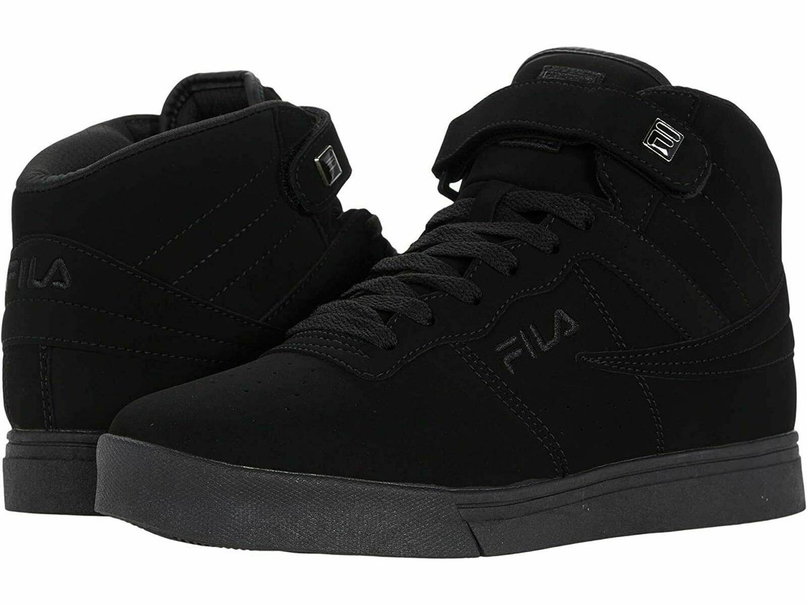
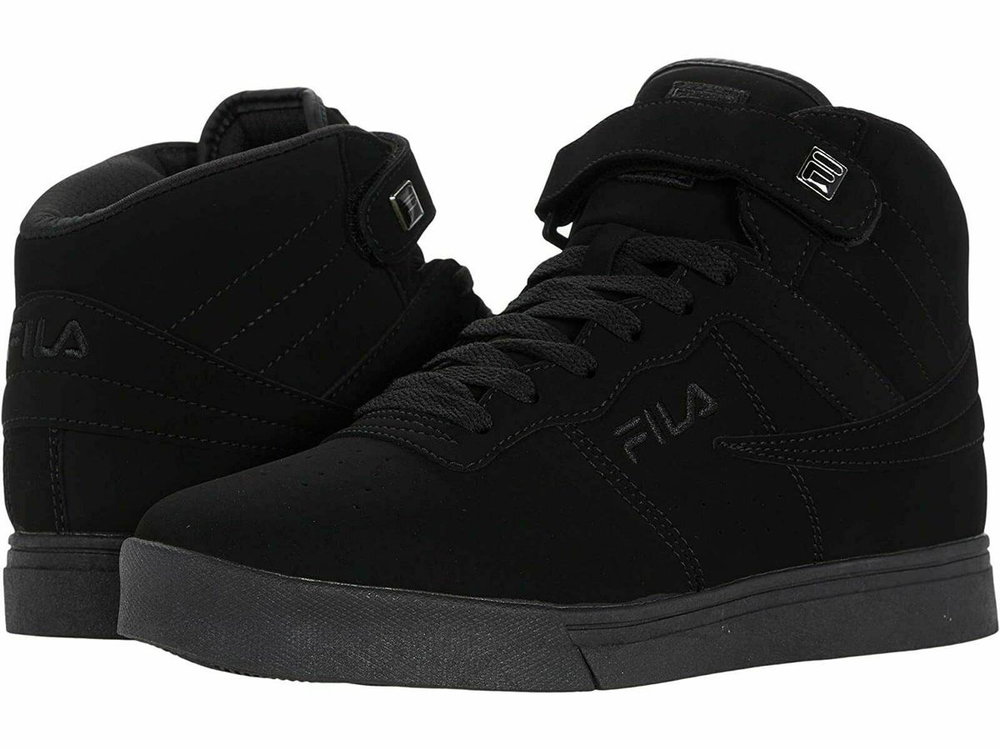

POSICIONAMIENTO
POSICIONAMIENTO STATIC
POSICIONAMIENTO STATIC2 (SIN MARGIN_TOP)
2do texto en la misma linea
POSICIONAMIENTO RELATIVE
teXTO CON POSICIONAMIENTO RELATIVE
en un bloque inline -----------------------------------

POSITION RELATIVE CON INDEX
TEXTO CON POSICIONAMIENTO RELATIVE CON INDEX EN UN BLOQUE INLINE_ _ _ _ _ _ _ _ _ _
2do TEXTO EN LA MISMA LINEA
POSICIONAMIENTO ABSoLUTE RESPECTO A PAGINA INiCIAL
2do texto de position absolute en la misma linea
POSICIONAMIENTO ABSOLUTE RESPECTO A RELATIVE
La imagen es absolute respecto al Div relative

2do teXTO position absolute relative en misma linea
POSICIONAMIENTO FIXED
POSICIONAMIENTO STiCKY
La FAP controla, vigila y defiende el espacio aéreo del país,
que cubre su territorio y el mar adyacente hasta el límite de
las doscientas millas, de conformidad con la ley y
con los tratados ratificados por el Estado,
con el propósito de contribuir a garantizar la independencia,
soberanía e integridad territorial de la República.
La FAP controla, vigila y defiende el espacio aéreo del país,
que cubre su territorio y el mar adyacente hasta el límite de
las doscientas millas, de conformidad con la ley y
con los tratados ratificados por el Estado,
con el propósito de contribuir a garantizar la independencia,
soberanía e integridad territorial de la República.
SISMO DE MAGNITUD 4.5 EN CHOSICA (LIMA) FUE SENTIDO ENTRE LEVE Y MODERADO POR LA POBLACIÓN
Evento no reporta hasta el momento daños a la vida ni la salud de las personas
El Instituto Geofísico del Perú (IGP) informó que un sismo de magnitud 4.5, con epicentro ubicado a 15 kilómetros al suroeste de Chosica, distrito de Lima, en la provincia y departamento del mismo nombre, y con una profundidad de 71 kilómetros, se registró el miércoles 9 de setiembre a las 13:17 horas. El evento alcanzó una intensidad III- IV.
Al respecto, el Instituto Nacional de Defensa Civil (INDECI), a través del Centro de Operaciones de Emergencia Nacional (COEN), coordinó con la Dirección Desconcentrada de dicha región, así como con las autoridades locales e instituciones competentes, quienes informaron que el movimiento telúrico fue percibido entre leve y moderado por la población.
Al momento, no se reportan daños personales ni a la infraestructura; sin embargo, las instituciones de primera respuesta continúan monitoreando las zonas vulnerables. Por su parte, la Dirección de Hidrografía y Navegación (DHN) de la Marina de Guerra del Perú informó que este fenómeno no genera tsunami en el litoral peruano.
El INDECI recomienda que, en caso de sismo, se mantenga la calma y evite el pánico. Asimismo, es necesario elaborar un plan de evacuación familiar y verificar las vías de salida; del mismo modo se debe ubicar las zonas de seguridad internas y externas y tener su mochila de emergencia a la mano.
El Perú se encuentra ubicado en la zona denominada Cinturón de Fuego del Pacífico, donde se registra aproximadamente el 85% de la actividad sísmica mundial.
El INDECI, a través del Centro de Operaciones del Emergencia Nacional (COEN), coordina con las autoridades regionales y locales, monitorea la situación y exhorta mantener activos sus Centros de Operaciones de Emergencia.
Lima, 9 de setiembre de 2020
SISMO DE MAGNITUD 4.5 EN CHOSICA (LIMA) FUE SENTIDO ENTRE LEVE Y MODERADO POR LA POBLACIÓN
Evento no reporta hasta el momento daños a la vida ni la salud de las personas
El Instituto Geofísico del Perú (IGP) informó que un sismo de magnitud 4.5, con epicentro ubicado a 15 kilómetros al suroeste de Chosica, distrito de Lima, en la provincia y departamento del mismo nombre, y con una profundidad de 71 kilómetros, se registró el miércoles 9 de setiembre a las 13:17 horas. El evento alcanzó una intensidad III- IV.
Al respecto, el Instituto Nacional de Defensa Civil (INDECI), a través del Centro de Operaciones de Emergencia Nacional (COEN), coordinó con la Dirección Desconcentrada de dicha región, así como con las autoridades locales e instituciones competentes, quienes informaron que el movimiento telúrico fue percibido entre leve y moderado por la población.
Al momento, no se reportan daños personales ni a la infraestructura; sin embargo, las instituciones de primera respuesta continúan monitoreando las zonas vulnerables. Por su parte, la Dirección de Hidrografía y Navegación (DHN) de la Marina de Guerra del Perú informó que este fenómeno no genera tsunami en el litoral peruano.
El INDECI recomienda que, en caso de sismo, se mantenga la calma y evite el pánico. Asimismo, es necesario elaborar un plan de evacuación familiar y verificar las vías de salida; del mismo modo se debe ubicar las zonas de seguridad internas y externas y tener su mochila de emergencia a la mano.
El Perú se encuentra ubicado en la zona denominada Cinturón de Fuego del Pacífico, donde se registra aproximadamente el 85% de la actividad sísmica mundial.
El INDECI, a través del Centro de Operaciones del Emergencia Nacional (COEN), coordina con las autoridades regionales y locales, monitorea la situación y exhorta mantener activos sus Centros de Operaciones de Emergencia.
Lima, 9 de setiembre de 2020
 
